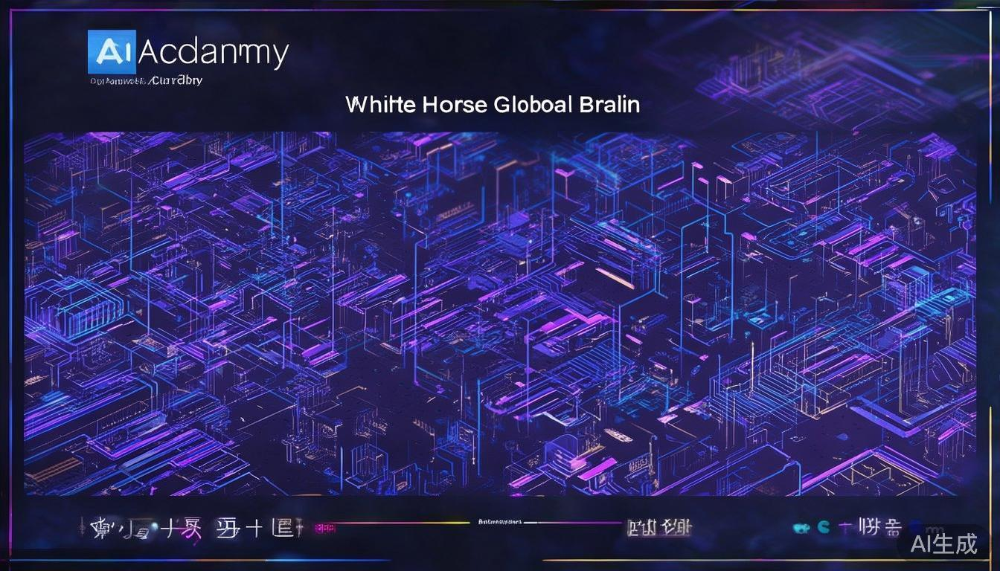

智能体系统教程 每日新增 · MCP 协议 · 提示词工程 · RAG 检索增强 · 微调与私有化部署 · 多模态 AIGC · AI 职场实战 · 24 个毕业设计项目 · 成长故事曲线 —— 从 LLM「使用者」蜕变为 AI 系统「构建者」。独立分站 · 权威资源馆 / 国家 AI 教育馆 / AI 大事记馆 / AI 概念库 / AI 发展史 五馆齐开。

记忆、上下文工程、通信协议、Agentic-RL、性能评估、多智能体编排与 Agent 运行时框架。
RAG 检索增强生成 + 微调与私有化部署 + 开源旗舰接入（Hy4 1M 长上下文）+ 端侧推理部署（LiteRT-LM / 星火 X2.5 百万上下文），让大模型拥有企业私有知识与专属能力。
多模态理解（VLM 图文问答/OCR）+ 开源多模态权重部署（DeepSeek-V4-Flash-Vision-Exp）+ 多模态 AIGC（文生图/视频）+ 机器学习与深度学习基础，补齐技术纵深。
股票数据查询、K 线分析与投资洞察智能体
查看项目自然语言 SQL 查询，对话式数据库操作
查看项目多智能体协作的专栏内容创作流水线
查看项目健康记录管理、趋势洞察与建议生成
查看项目邮件分类、摘要与智能回复助手
查看项目网络健康监测与自动诊断报告
查看项目基于记忆的心理陪伴与情绪记录 Agent
查看项目数据探索、清洗与可视化分析智能体
查看项目每个共创项目可转化为 DSH Skill（name/SKILL.md），含 frontmatter + 工具指令 + 编排逻辑，即插即用。
Hello-Agents 第十章解析 MCP / A2A / ANP 协议，正好补 DSH 的协议层设计，让插件可互操作。
MCP · A2A · ANPExtra08「如何写出好的 Skill」+ Extra05「Agent Skills 与 MCP 对比」，为 DSH 插件开发者提供规范指引。
Skill 写作 · 最佳实践涵盖 Agent 概念、ReAct 范式、RAG、MCP 协议、多智能体协作等高频面试问题与参考答案，来自 Hello-Agents Extra01 章节。
认知与工具 智能体核心 高级专项 职业实战。每阶段对应章节、技能清单与里程碑，查看 14 周详细计划表。
四大认证：Prompt 工程师 智能体工程师 RAG 应用工程师 微调与部署工程师。以「作品 + 章节记录」为凭证，查看认证流程与自测清单。
掌握提示词组成要素、撰写技巧、少样本与思维链，能稳定产出高质量提示词。
对应章节 17-18理解智能体范式与框架，能独立构建、评估并优化多智能体应用。
对应章节 01-16掌握向量化、向量数据库与检索增强生成，能搭建企业级知识库问答系统。
对应章节 19掌握私有化部署、LoRA 微调与量化优化，能落地专属大模型服务。
对应章节 20提示词工程师 / Agent 开发 / RAG 工程师 / 微调部署工程师 / 数据分析师 / AIGC 工程师。技能栈 + 薪资 + 学习路径，查看岗位详解与求职策略。
| 岗位 | 核心技能 | 参考薪资 | 对应章节 |
|---|---|---|---|
| 提示词工程师 | 提示词工程 / 角色设定 / 评测迭代 | 8-15K | 17-18 |
| 数据分析师 | Python / SQL / AI 辅助分析 | 10-14K | 22-23 |
| Agent 开发工程师 | LangChain / LangGraph / 多智能体 | 18-20K | 04-16 |
| RAG 应用工程师 | Embedding / 向量库 / 检索优化 | 15-20K | 19 |
| 大模型微调 / 部署工程师 | LoRA / 量化 / Ollama / 推理优化 | 20-35K | 20 |
| 多模态 / AIGC 工程师 | Stable Diffusion / 文生视频 / CV | 15-20K | 21 |
| AI 产品经理 | 需求分析 / 场景设计 / 全站认知 | 15-30K | 24 |
这里汇集国际 AI 组织下发的文件、国际 AI 论坛、各级 AI 大赛、AI 交流协会期刊、主流平台 AI 爆款话题、18 篇经典论文、12 门顶级课程，以及国家 AI 教育公开内容——每条均来自官方/权威渠道并标注出处，供你追根溯源、按图索骥。三大分馆：权威资源馆 · 国家 AI 教育馆 · AI 大事记馆。